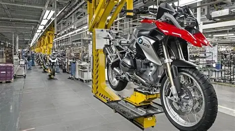
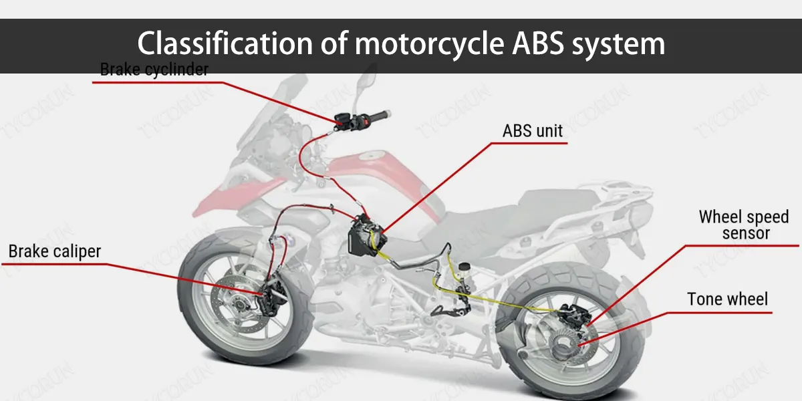
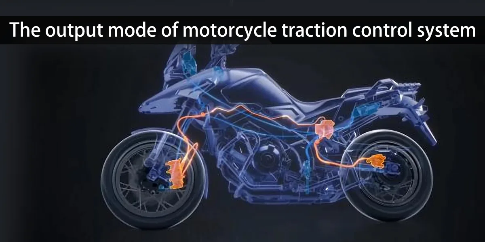
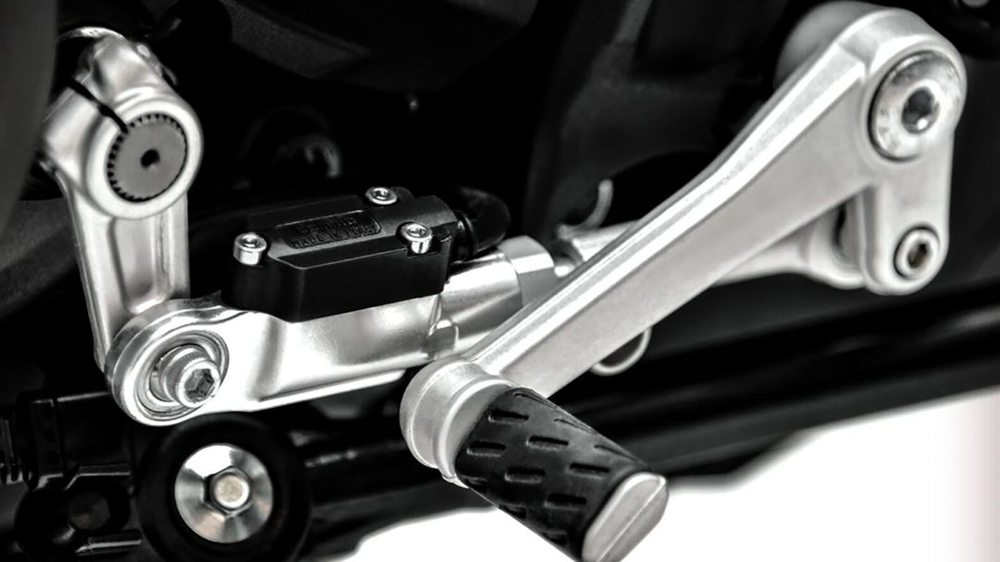
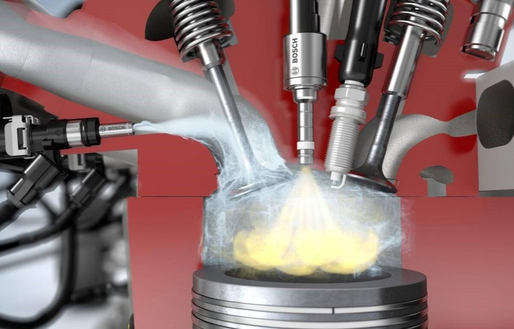
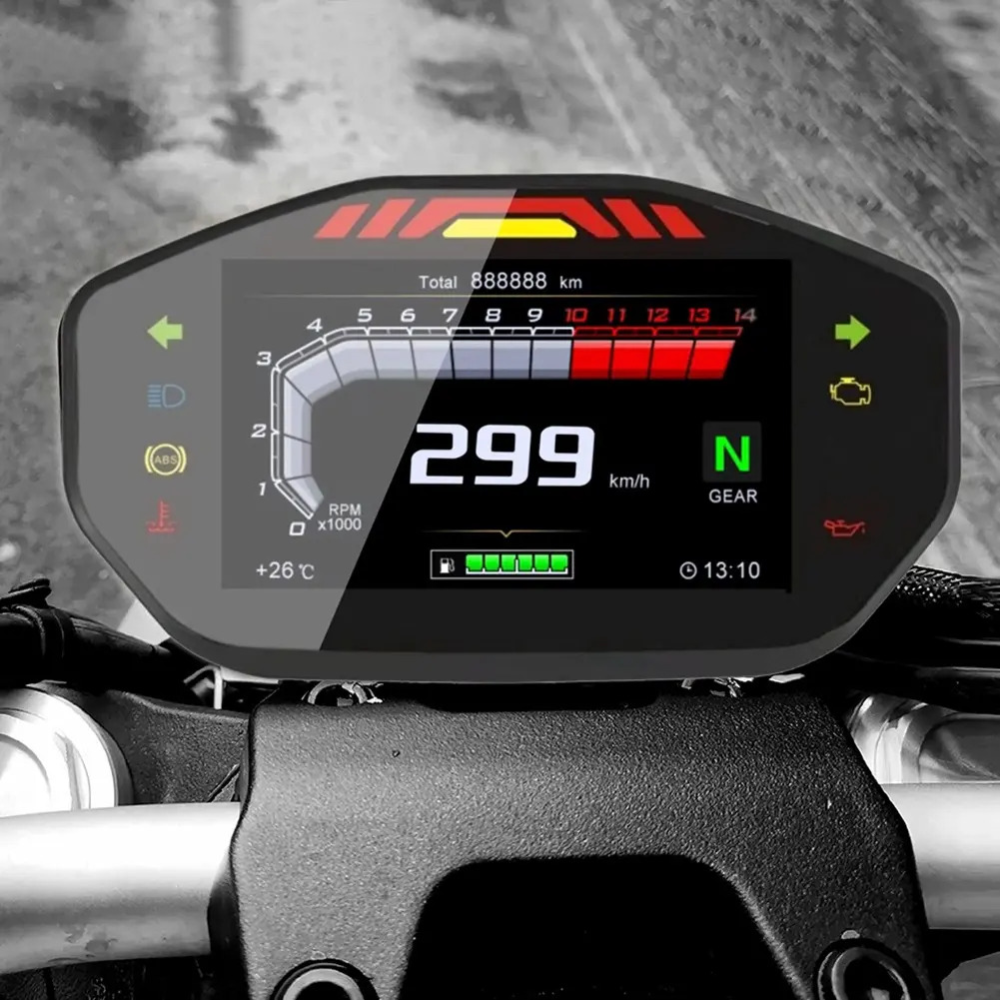
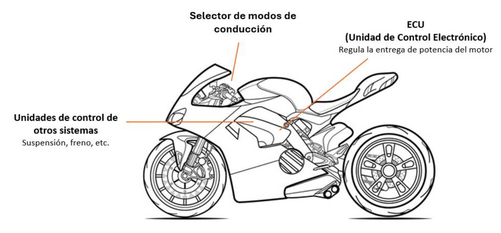
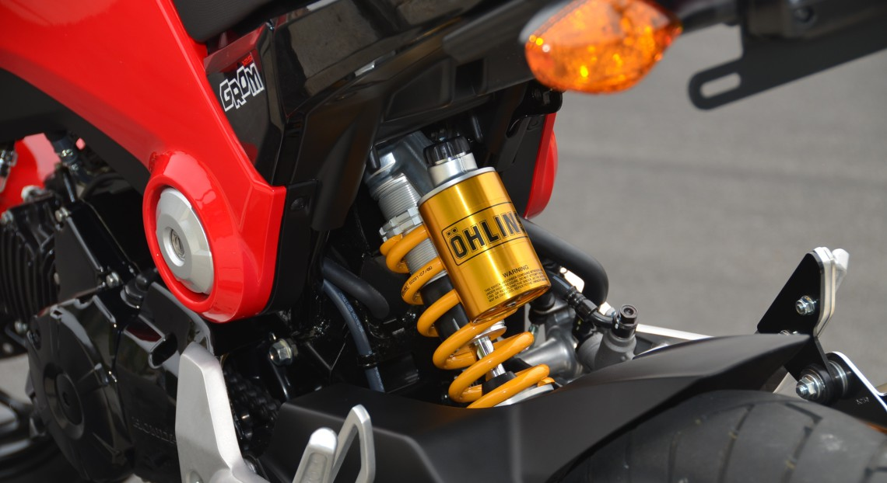

Introducción

Las motocicletas modernas incorporan tecnologías avanzadas que mejoran la seguridad, el rendimiento y la comodidad del conductor. Gracias a la electrónica, hoy es posible controlar mejor la potencia del motor, reducir riesgos de accidentes y optimizar la experiencia de conducción.
Los fabricantes invierten millones de dólares en investigación para crear sistemas más inteligentes que permitan disfrutar de motocicletas más rápidas y seguras.
Sistema ABS

El sistema ABS (Anti-lock Braking System) evita que las ruedas se bloqueen durante una frenada brusca.
Este sistema ayuda al conductor a mantener el control de la motocicleta, especialmente sobre superficies mojadas o resbaladizas.
Ventajas
- Mayor seguridad.
- Menor riesgo de caídas.
- Mejor control en emergencias.
- Frenadas más eficientes.
Control de Tracción

El control de tracción supervisa constantemente la velocidad de las ruedas. Si detecta pérdida de adherencia, reduce automáticamente la potencia para evitar derrapes.
Es especialmente útil en carreteras mojadas o superficies de baja adherencia.
Beneficios
- Mayor estabilidad.
- Más seguridad al acelerar.
- Reducción de derrapes.
- Mejor comportamiento en curvas.
Quick Shifter

El Quick Shifter permite cambiar marchas sin utilizar el embrague.
Este sistema mejora la rapidez de los cambios y aumenta el rendimiento en motocicletas deportivas y de competición.
Ventajas
- Cambios más rápidos.
- Mayor comodidad.
- Menor pérdida de potencia.
- Mejor rendimiento deportivo.
Inyección Electrónica

La inyección electrónica sustituyó a los carburadores tradicionales.
Permite controlar con precisión la cantidad de combustible enviada al motor, mejorando el consumo, la potencia y reduciendo emisiones contaminantes.
Beneficios
- Menor consumo de combustible.
- Arranque más eficiente.
- Mayor potencia.
- Menos contaminación.
Pantallas TFT

Las pantallas TFT son paneles digitales que muestran información importante como velocidad, revoluciones, navegación GPS, combustible y modos de conducción.
Son fáciles de leer y ofrecen una experiencia moderna al conductor.
Modos de Conducción

Muchas motocicletas modernas permiten seleccionar distintos modos de manejo.
- Rain (lluvia).
- Road (carretera).
- Sport (deportivo).
- Race (competición).
Cada modo modifica la respuesta del acelerador, la potencia y los sistemas electrónicos de asistencia.
Suspensiones Electrónicas

Las suspensiones electrónicas ajustan automáticamente la dureza de la suspensión según las condiciones del camino y el estilo de conducción.
Esto mejora la comodidad y la estabilidad en diferentes terrenos.
Tabla Comparativa
| Tecnología | Seguridad | Comodidad | Rendimiento |
|---|---|---|---|
| ABS | Excelente | Bueno | Bueno |
| Control de Tracción | Excelente | Bueno | Muy Bueno |
| Quick Shifter | Bueno | Excelente | Excelente |
| Inyección Electrónica | Bueno | Bueno | Excelente |
| Pantalla TFT | Bueno | Excelente | Bueno |
| Suspensión Electrónica | Muy Buena | Excelente | Excelente |